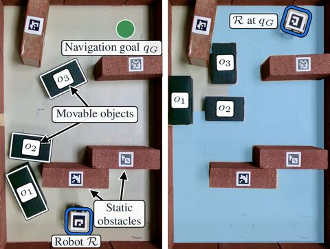

SPAR: Search-trained Push Action Ranker for Efficient Navigation Among Movable Obstacles
arXiv preprint, 2026
A transformer that ranks push actions for navigation among movable obstacles, trained on the outcomes of physics-based search. It cuts median simulator calls by 7.0x versus random search, and on a real robot SPAR Policy succeeded in 37 of 40 trials without a physics digital twin.